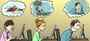
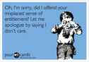
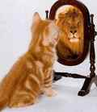

Corey is an iconoclast and the author of 'Man's Fight for Existence'. He believes that the key to life is for men to honour their primal nature. Visit his new website at primalexistence.com


I’m a firm advocate of action over thoughts. Disciplined action will always allow you to accomplish more and make you a better person than any amount of mental masturbation like affirmations, mantras, or visualizations. That said, I do believe that there are some mental habits that you can implement in your daily life to mold yourself into a better man.
In spite of all the “positive thinking” bullshit that is popular out there, I believe that eliminating negative thought patterns does much more to improve our state of mind than spoon-feeding fake positive messages. This is due to our negativity bias, where negative things affect us much more strongly than the positives. As an example, think of how a small fly in an otherwise excellent soup can ruin an entire meal.
We humans have already been endowed with a healthy mind; it is the toxic external influences that plant negative thinking patterns within us. The following is a list of mental habits that you can fix to improve your mindset. Try and see if you can identify any that strongly resonates with you.
What do chronic complainers, underachievers, feminists, fat advocates, BlackLivesMatter mob, homosexuals, school shooters, Zionists, and terrorists all have in common? Answer: They are all miserable, noxious, and hateful because they identify themselves as victims.
Thinking of yourself as a victim is one of the worst things you can do to yourself and the root cause of number of other negative mental habits—many of which are listed below. It’s unfortunate that many men today are behaving just like angry feminists because they suffer from victim mentality.
If you are one of those people, snap out of it before it consumes you. As a man, you must never feel sorry for yourself. And don’t think that you can cover it up with anger; it’s obvious to everyone around you.
The world is not fair, get used to it. It’s an ugly world out there and complaining about it is not going to fix it. You must always strive to make the best out of the situation you are faced with without complaining.
Why won’t women like me? Why are people such assholes? Why do I have to work at this shitty job? Why is my life so lousy? Why do I feel so miserable? Why me? Why, why, why… As you can see, rhetorical whys are expressions of powerlessness that do absolutely nothing to help you.
Instead of thinking in terms of why, think in terms of what: What are you going to do to resolve the situation? What is the best way to respond? What will you do to achieve the best possible outcome?

What’s done is done. If you learned your lesson, get over it and move on. The longer you dwell on your mistakes, the more you’ll be held back from moving forward.
Regrets usually come in the thought form of should’ve-could’ve-would’ve. If you ever catch yourself thinking or using these words, give yourself a nice slap in the face and snap out of it.
This usually appears in the form of “I am so [lazy, dumb, weak, unmotivated, etc.]”. Don’t ever place negative labels like these on yourself. And if what you’re thinking happens to be true, stop beating yourself up and do something about it.
Envy is for women. Stop comparing yourself with other more accomplished men just to feel inadequate. Why would you put yourself down like that?
It’s good to learn from other men who are accomplished, but don’t measure yourself against them. If you want a comparison, compare yourself with who you were a year ago or five years ago to see how much you’ve improved as a man.
These are classic traits of losers with victim mentality. Instead of taking responsibility, they would rather opt to protect their fragile egos by blaming someone or something else for their failures. I see far too many men giving feminists imaginary power by using them as scapegoats for their problems.
One of my favorite films is Papillon. In that movie, in spite of being wrongfully imprisoned under hellish conditions, I have never seen Steve McQueen’s character complain or blame once. Instead, he always does his best to endure his situation and is relentless in his pursuit for freedom.
Belief in luck is epidemic in the US where people pay billions in ‘stupid tax’.
Luck doesn’t exist. In fact, it’s not even a concept worth thinking about. Look at it this way: You either have control over things or you don’t, so why even think about something you can’t control? You might as well focus your energy on things that you do have control over rather than on things that hinge purely on probability. As Erasmus puts it: fortune favours the audacious.
One of the most insulting thing you can say to an accomplished man is to tell him how “lucky” he is—as if he reached his current status by pure chance instead of hard work and discipline. The same is also true when you tell someone who spent countless hours of preparation for an exam or performance to have “good luck.”
Much like luck, wishing and hoping assumes that you have no power to change your circumstances. There is no point wasting your mental energy thinking “I wish…”, “I hope…”, “If only…”, etc. Either do something about it or forget it.

Some people take wishing and hoping to another level and start engaging in thoughts about the good ol’ days when things used to be better or fantasize about living in a better world.
Again, either do something to improve your current reality or forget about it. You’ll never escape your reality of now, so you might as well make the best of it.

The world doesn’t owe you anything. You don’t deserve to be respected and your precious feelings don’t mean shit. Only women and spoiled children feel entitled to freebies or special treatment. As a man, you must earn your respect and fight for what you want.

Another pair of useless concepts. Only people with no confidence and self-esteem obsess over them. You can only gain these qualities by plunging yourself into action and learning from the experience.
It’s laughable that so many people do the opposite and seek confidence and self-esteem first (usually by overloading themselves with information) before they finally decide to take a step. Stop thinking, stop talking, and just do it.
First, you must become aware of them. Because these thought patterns are habitual, they will often appear automatically without you ever noticing them. Hopefully this article has done enough to make identifying them easier.
And once you have become aware of these thought patterns, it is all a matter of refocusing your attention to productive thoughts. Focus on what you have control over and what you can do to improve your life situation. It will take some time to re-wire your neurons to fix your mental habits, but it is easily doable if you are persistent.
If you have any tips of your own, feel free to share them in the comments section below.
Read More: This Accidental Experiment Shows The Superiority Of Patriarchy